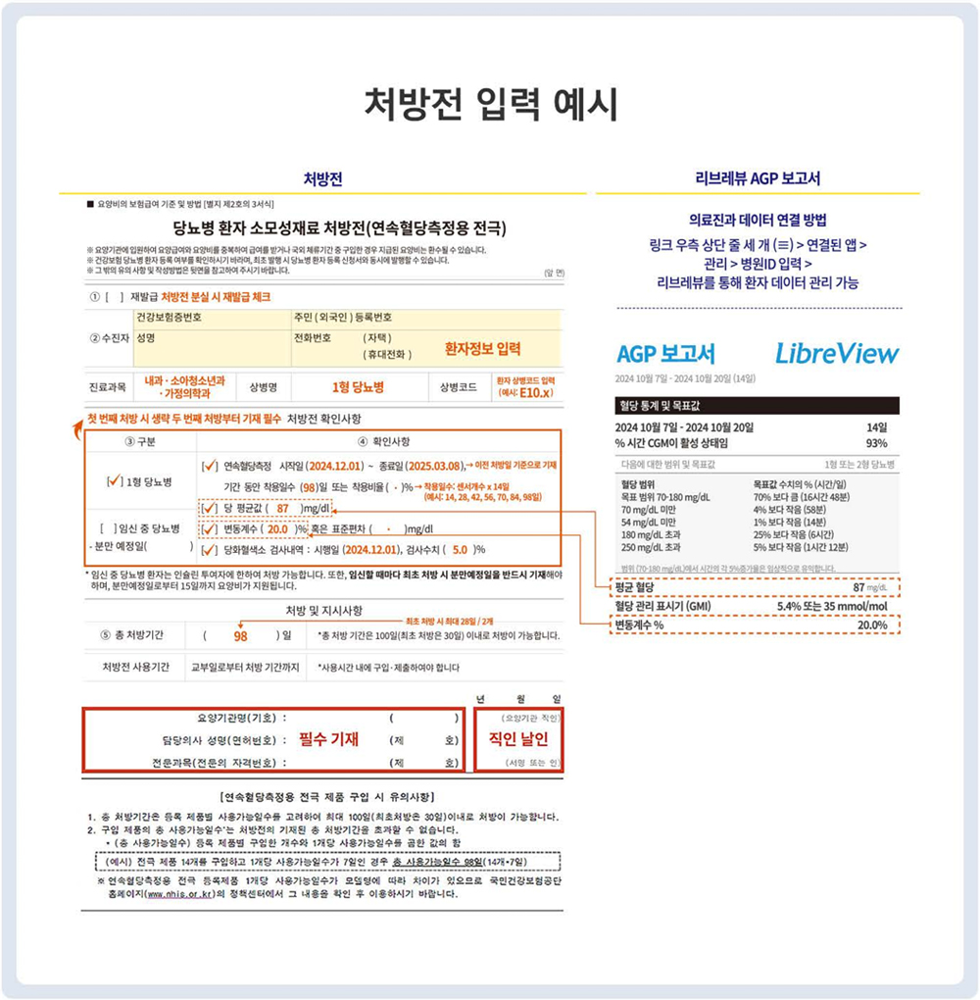

처방전 입력 예시
프리스타일 리브레 사용일수 및 처방일수
모델명
(제품 등록명) |
최대
사용일수
|
최대 처방일수 / 개수
|
|
최초처방
|
최초처방 이후
|
|
FreeStyle Libre
|
14일/개
|
28일/2개
|
98일/7개
|
최초 처방시
- 총 처방기간은 최대 28일 동안, 2개까지 처방 가능
최초처방 이후
- 1) 아래의 처방전 내 “처방전 확인사항” 필수 기재 → 기재 내용은 리브레뷰 내 “AGP 보고서”에서 확인
- 2) 총 처방기간은 최대 98일 동안, 7개까지 처방 가능
리브레뷰 AGP 보고서 확인 방법
리브레뷰 (www.libreview.com) 로그인 → 혈당이력 → 혈당 보고서 → AGP 보고서
처방전 확인사항 내 “당평균값”과 “변동계수＂는 리브레뷰의 AGP 보고서를 이용하세요.

· 당뇨병환자 소모성 재료 처방전 (연속혈당측정 전극용)
다운로드
· 요양비 지급청구서 (당뇨병 소모성 재료)
다운로드